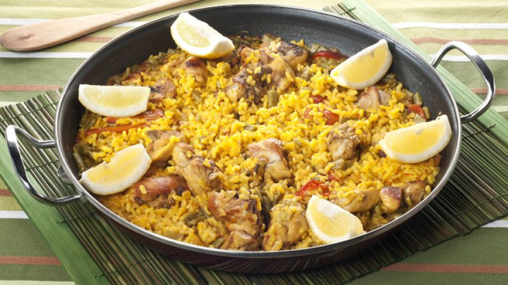

Vierte el aceite sobre la paella y enciende el fuego. Una vez el aceite esté caliente, añade el conejo y el pollo y sofríelos hasta que adquieran un color dorado. Recuerda darle vueltas a las piezas de carne para que se hagan uniformemente. A continuación echa las verduras y rehógalas. Ahora vierte el tomate rallado y sofríelo del mismo modo, removiendo constantemente.
Ahora es el turno del pimentón. Añádelo y remuévelo apenas un instante, enseguida tienes que verter el agua hasta los remaches de la paella para evitar que se queme.
Añade el azafrán, el romero y la sal. Una vez que el agua rompa a hervir, déjala unos 5 minutos en ebullición con fuego vivo. A continuación baja a fuego medio y déjala cocer entre 20 y 30 minutos.
Aviva el fuego y añade el arroz. La forma tradicional de ponerlo es haciendo una cruz en el agua que está hirviendo y repartirlo de modo uniforme por la superficie del recipiente. Aprovecha ahora para probar y rectificar de sal.
Mantén el fuego fuerte durante unos 10 minutos y reduce el fuego a la mitad durante un tiempo parecido hasta que el arroz quede en su punto de cocción.
Sal para evitar que se queme. Cuando queremos que la carne se haga poco a poco y vaya dorándose a un ritmo progresivo pero el fuego es alto, podemos echar sal en los extremos de la paella para evitar que ésta se queme. Si lo hacemos en un fogón, nosotros mismos podremos regular la intensidad del calor, pero si optamos por hacer la paella sobre leña podemos hacer uso de este consejo si queremos que la carne no se nos queme.

Muestra de presentación
Evitar amargor. Para que la paella no sepa amarga, debemos evitar que el fuego sea alto en el momento de echar el pimentón. Si hacemos que este ingrediente se queme, dejará un sabor amargo al resultado final de la preparación.
¿Hasta dónde verter el agua? Generalmente, para saber qué cantidad de agua para la cocción utilizar debemos calcular que sea el doble que la de arroz. Sin embargo, otra forma de saberlo es vertiendo el agua hasta los remaches de las asas del recipiente.